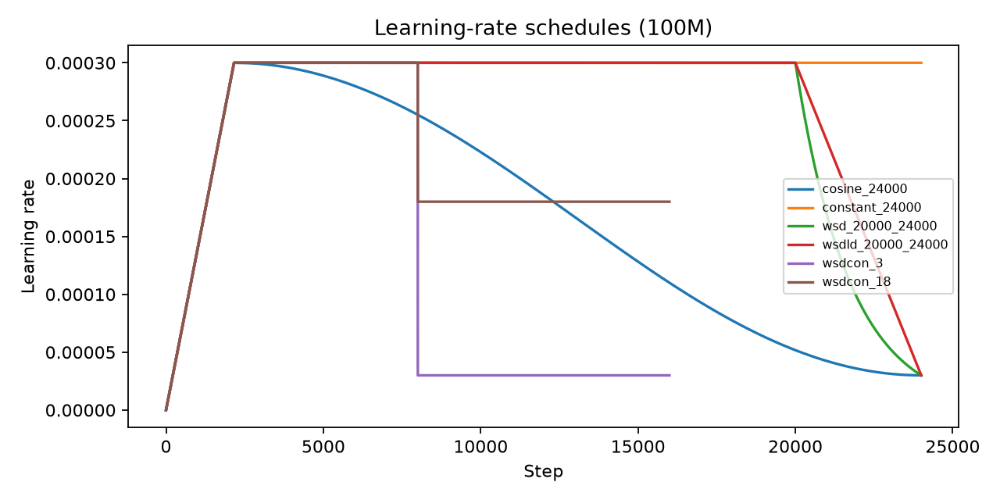
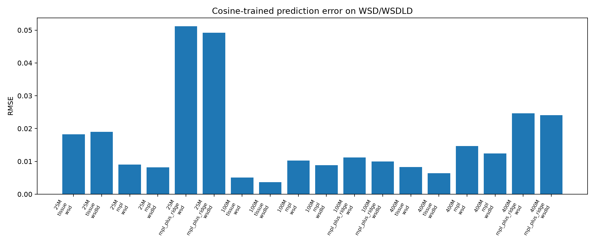
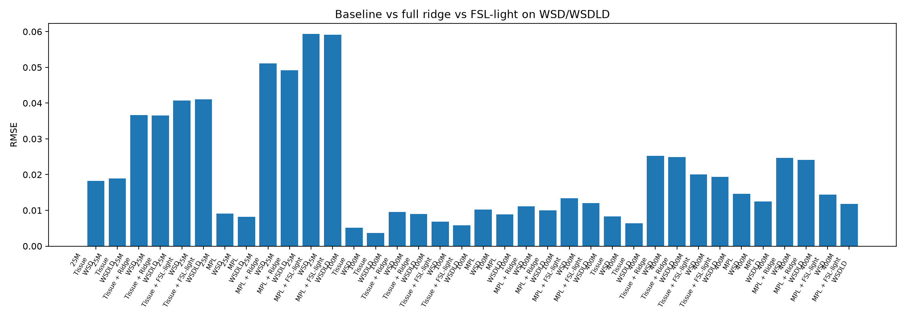
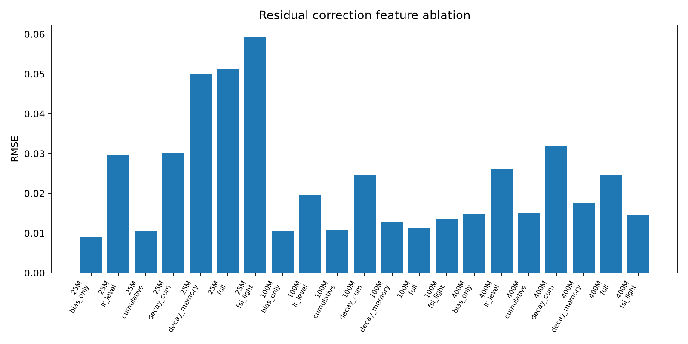
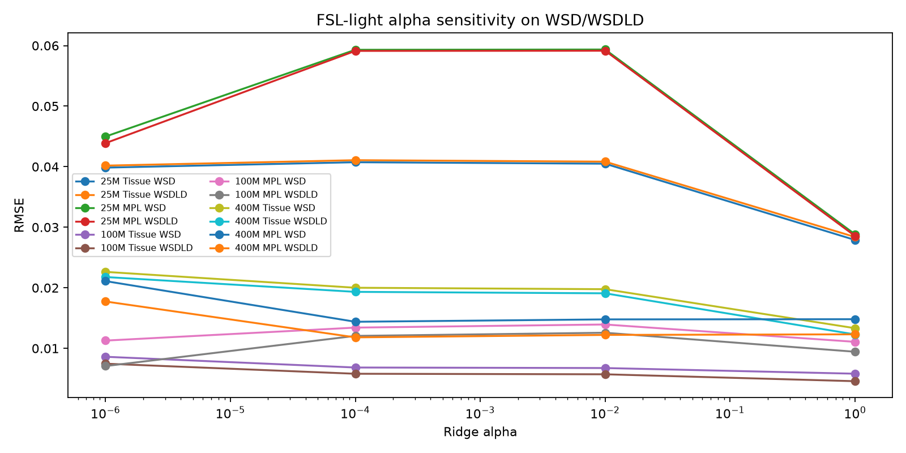
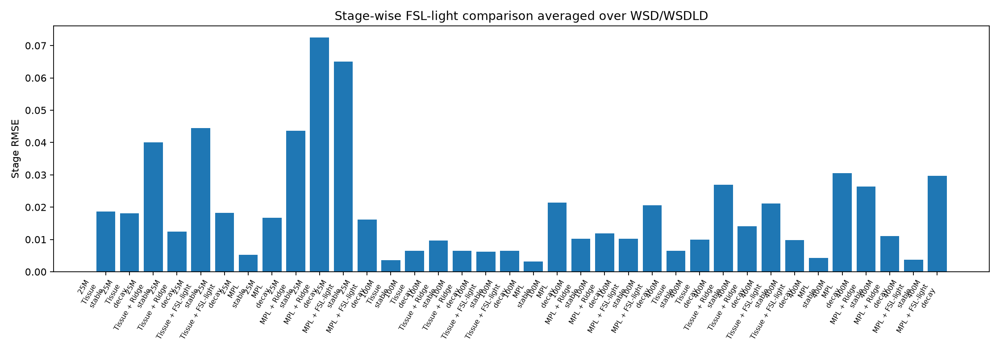
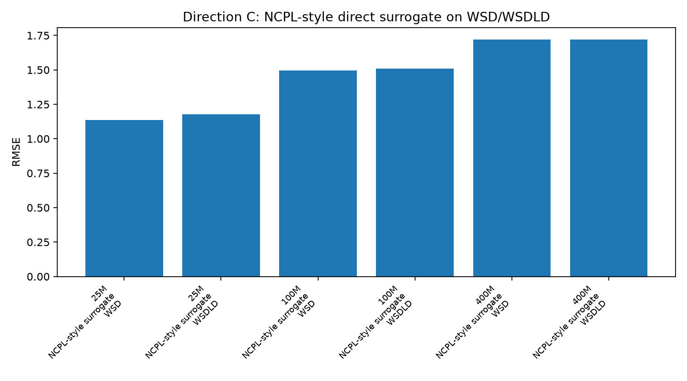

实现 Tissue Annealing Law 与 MPL baseline，并输出 reproduction、cross-schedule 和 stage-wise metrics。
Final Project Defense Slides
跨学习率调度的 LLM 预训练损失曲线预测
Predicting LLM Pretraining Loss Curves across Learning-Rate Schedules：从 Multi-Power Law 复现出发，系统检验 cosine-to-WSD/WSDLD 外推、残差修正、稳健性与神经 surrogate 的可行性。
Project Abstract
项目摘要
本项目关注一个实际训练问题：当我们已经观察到某些 learning-rate schedule 下的预训练损失曲线时，能否预测另一种 schedule 下整条 loss curve 的变化？项目不重新训练 LLM，而是使用课程提供的 25M、100M、400M loss curves，复现并扩展 Multi-Power Law loss prediction，在严格的 cosine-to-WSD/WSDLD 设置下进行系统评估。
比较 full ridge residual correction 与 FSL-light schedule functional，分析残差修正是否具备跨 schedule 泛化能力。
结果表明 baseline 已经很强，复杂 residual 与神经 surrogate 在小数据设置下更容易过拟合。
1. 问题背景与目标
为什么要预测跨 schedule 的损失曲线？
背景
- LLM 预训练成本高，完整训练一次模型需要大量计算资源。
- 学习率调度会影响 loss 下降速度、decay 阶段行为和最终 loss。
- 实际训练中常需要在 cosine、constant、WSD、WSDLD 等 schedule 之间比较策略。
目标
- 用已有曲线拟合 predictor，预测新 schedule 下完整 loss trajectory。
- 比较 MPL、Tissue、residual correction 和 neural surrogate 的外推能力。
- 识别 WSD/WSDLD decay 阶段中最容易出现系统误差的位置。
本项目的核心不是追求“某个新方法必然最好”，而是建立一条可复现的跨 schedule 评估 pipeline，并诚实分析不同方法在小数据设置下的可靠性。
Research Questions
希望回答的核心问题
- MPL 是否能从 cosine schedule 外推到 WSD/WSDLD schedule？
- Tissue 的 decay memory 是否能更稳定地解释学习率衰减阶段？
- 在 base predictor 之后学习 residual correction 是否真正改善跨 schedule 预测？
- full ridge 的失败是实现问题，还是 cosine-only residual learning 的过拟合诊断？
- NCPL-style neural surrogate 在当前课程数据规模下是否适合作为主方法？
- 哪些指标最能解释模型在 stable 和 decay 阶段的不同表现？
Cross-Schedule Prediction
WSD / WSDLD
MPL
Tissue
FSL-light
Stage-wise Error
2. 数据处理与实验设置
数据来源与曲线类型
数据来源
课程提供的 loss curve CSV 被组织为三个模型规模目录：
loss_curve_repo/csv_25loss_curve_repo/csv_100loss_curve_repo/csv_400
每个 CSV 包含 step、lr、loss 三列。

这些曲线不是独立同分布样本，而是不同 schedule、不同训练长度和不同模型规模下的训练轨迹。因此，实验设计必须明确 train/test split，避免把跨 schedule 外推误写成普通插值。
Experiment Split
严格训练/测试划分
| 用途 | 曲线 | 说明 |
|---|---|---|
| Strict train | cosine_24000.csv |
主实验只用一条 cosine 曲线训练 base predictor 和 residual correction。 |
| Main test | wsd_20000_24000.csvwsdld_20000_24000.csv |
核心测试集，用于评估从 cosine 到 WSD/WSDLD 的跨 schedule 外推。 |
| Auxiliary test | cosine_72000.csv、constant_72000.csv、wsdcon_3.csv、wsdcon_18.csv |
辅助检查长程外推和其它 schedule 变体，不作为主结论唯一依据。 |
这个划分让实验问题更清楚：模型不是在同类 schedule 上拟合再测试，而是必须面对学习率衰减结构发生变化后的系统误差。
Metrics And Phases
评价指标与阶段划分
总体曲线指标
RMSE：强调整条曲线上的较大点误差。MAE与PREDE：衡量绝对误差和平均相对误差。final_rel_error：只看最后一步 loss 的相对误差。auc_rel_error：比较预测曲线与真实曲线的面积差异。
阶段划分
warmup_or_start：0 到 2160 step。post_warmup_stable：2160 到 20000 step。decay：20000 到 24000 step。long_horizon：24000 step 之后。
final error 有时会掩盖问题：某个 correction 可能改善最后一点，却牺牲 stable 阶段或整条曲线 RMSE。因此本项目同时报告 stage-wise metrics。
Experimental Pipeline
完整实验流程
Step 1读取三个模型规模的 loss、lr、step 数据，并统一曲线命名与 split。
Step 2拟合或读取 Tissue/MPL baseline，得到 base loss prediction。
Step 3在 cosine training residual 上训练 full ridge 或 FSL-light correction。
Step 4在 WSD/WSDLD 和辅助曲线上输出 metrics、stage metrics、prediction CSV。
Step 5生成对比图、消融图、稳健性图，并解释 negative findings。
scripts/run_cross_schedule.py 生成 cross-schedule metrics 与 FSL-light rows。
run_ablation.py 与 run_robustness.py 分析特征、alpha、multi-start 与阶段敏感性。
scripts/make_figures.py 汇总生成报告和答辩用 PNG。
Baseline 1
Multi-Power Law：累计学习率与学习率变化项
L(t) = L0 + A · S1(t)-α + B · LD(t)
直观解释
S1(t) 表示累计学习率，刻画训练推进量；LD(t) 使用学习率变化和饱和幂律函数描述 schedule decay 带来的额外影响。
项目中的实现
- 预测入口为
src/predictors.py的predict_mpl_curve()。 - 主实验中使用 SciPy L-BFGS-B wrapper 在
cosine_24000.csv上重新拟合 MPL-like 参数。 - 由于目标函数非凸，Direction B 使用 multi-start 检查初值敏感性。
MPL 是强 baseline，但它在 decay 阶段可能出现明显误差，因此不能只看总体平均结果。
Baseline 2
Tissue Annealing Law：简单但稳定的 decay memory
L(t) = L0 + A · S1(t)-α - C · S2(t)
核心思想
S2(t) 只累积正向学习率下降信号，并通过 lambda_decay 保留一段 memory。它用更少参数表达 decay 影响，解释性强。
为什么 Tissue 很重要
- 它不是最复杂的方法，但在当前数据上整体表现稳定。
- 它为 residual correction 提供一个可解释 base predictor。
- 它的阶段误差比 MPL 更均衡，帮助解释 WSD/WSDLD decay 阶段。
这个项目中的一个关键发现是：在小数据跨 schedule 外推中，简单可解释的模型有时比自由度更高的方法更可靠。
3. 复现实验结果
复现结果与实现差异
复现流程
scripts/run_reproduction.py跑 paper-like train split。- 输出
results/metrics/reproduction_metrics.csv，共 36 rows。 - 主实验使用
run_cross_schedule.py在 strict cosine split 下重新比较。
关键差异
- 默认 reproduction 可使用预计算 MPL 参数，主实验则使用 fresh SciPy refit。
- SciPy L-BFGS-B 与原仓库 PyTorch AdamW 拟合流程不完全相同。
- MPL 参数敏感，因此单次 refit 不能代表全部不确定性。
Tissue WSD/WSDLD 平均 RMSE0.010101
MPL WSD/WSDLD 平均 RMSE0.010571
Tissue final relative error0.004618
MPL AUC relative error0.001878
Residual Correction Motivation
为什么尝试 residual correction？
MPL 和 Tissue 都已经把主要 loss 下降趋势建模出来，但在从 cosine 外推到 WSD/WSDLD 时，decay 阶段仍可能出现系统偏差。Residual correction 的想法是：保留 base predictor 的主体结构，只学习它在训练曲线上的残差。
r(t) = y_true(t) - y_base(t)
r(t) ≈ X(t)w
y_pred(t) = y_base(t) + X(t)w
r(t) ≈ X(t)w
y_pred(t) = y_base(t) + X(t)w
关键风险
- 训练 residual correction 的数据只有一条 cosine curve。
- 如果特征太多，模型会学习 cosine residual 的局部形状，而不是可迁移规律。
- 因此 full ridge 本身也可以作为过拟合诊断。
Residual correction 的目标不是替代 baseline，而是检验 schedule functional 是否能解释 baseline 留下的系统误差。
Full Ridge Diagnosis
Full ridge 失败说明了什么？
Full ridge 特征
bias、log_s1、eta_norm、s1_sqdecay_cum与三种 decay memoryt_norm与is_decay
观察结果
- Tissue + full ridge 平均 RMSE 从 0.010101 变为 0.023623。
- MPL + full ridge 平均 RMSE 从 0.010571 变为 0.028372。
- 有些 final error 改善，但整条曲线误差明显变差。

4. 方法与结果对比：Direction A
FSL-light：更低自由度的 schedule functional
设计动机
Task 2 提升计划参考 Functional Scaling Law 的 intrinsic time 和 convolutional schedule functional，避免把 full ridge 特征堆得过多。FSL-light 仍以 Tissue/MPL 为 base predictor，只学习轻量 residual。
log_tau：归一化累计学习率的对数坐标。eta_norm：当前学习率相对峰值。decay_conv：平滑后的学习率衰减记忆。is_decay：是否进入 decay 相关状态。

Direction A Results
主实验结果：FSL-light 更克制，但未稳定超过 baseline
| 方法 | 平均 RMSE | 平均 final relative error | 平均 AUC relative error | 解释 |
|---|---|---|---|---|
| Tissue | 0.010101 | 0.004618 | 0.002255 | 最稳定的简单 baseline。 |
| Tissue + full ridge | 0.023623 | 0.006110 | 0.006522 | RMSE 明显变差，说明 full ridge 过拟合。 |
| Tissue + FSL-light | 0.022299 | 0.004571 | 0.006112 | final error 接近 Tissue，但整体 RMSE 仍变差。 |
| MPL | 0.010571 | 0.010235 | 0.001878 | 强 baseline，AUC error 最低。 |
| MPL + full ridge | 0.028372 | 0.007102 | 0.007580 | final error 有改善，但整条曲线明显变差。 |
| MPL + FSL-light | 0.028353 | 0.010768 | 0.006129 | 比 full ridge 的 AUC error 略低，但 RMSE 仍高。 |
这组结果支持的不是“FSL-light 全面胜出”，而是“有约束的 residual correction 比 naive feature stacking 更合理，但当前训练信息仍不足”。
Ablation Study
哪些 residual 特征真正有用？
消融结论
- 对 Tissue base，
lr_level的平均 RMSE 为 0.008984，略优于原始 Tissue。 cumulative与decay_cum对 Tissue 也有轻微改善，平均 RMSE 约 0.00988。- 对 MPL base，
bias_only与cumulative更稳，复杂 decay 特征反而变差。

Ablation 说明：有效 residual correction 不是简单增加特征数量，而是要匹配 base predictor 已经解释和未解释的误差结构。
Direction B
稳健性实验：alpha sweep 与 MPL multi-start

解释
- FSL-light 使用 ridge correction，因此 alpha 会直接影响过拟合程度。
- alpha=1 时，Tissue + FSL-light 平均 RMSE 降到 0.015387，MPL + FSL-light 降到 0.017510。
- 更强正则能缓解过拟合，但仍没有稳定超过 Tissue/MPL baseline。
- MPL multi-start 的 RMSE std 约为 0.003 到 0.004，说明非凸拟合存在可见不确定性。
Direction B 的价值在于提高结论可信度：当前限制主要来自训练信息不足与参数敏感性，而不是某个单一超参数没有调好。
Stage Sensitivity
阶段误差揭示了 full-curve RMSE 背后的机制

主要发现
- MPL 的 decay RMSE 明显高于 stable RMSE，平均 ratio 约为 5.70。
- Tissue 的 decay/stable ratio 约为 1.44，阶段表现更均衡。
- full ridge 和 FSL-light 往往会把误差从 decay 段转移到 stable 段。
- 因此，final error 或 decay error 的局部改善不一定意味着整体预测变好。
这也是本项目最重要的分析之一：一个方法可能看起来修正了 decay，但如果破坏了 stable 阶段，整体曲线预测仍会失败。
Direction C
NCPL-style neural surrogate：高风险 baseline
方法设计
- 特征：
log_model_size、step_norm、log_step、log_tau、eta_norm、decay_conv、is_decay。 - 模型：
StandardScaler+MLPRegressor。 - 目标：预测
log(loss)，再指数变换回 loss。 - 输出：
ncpl_surrogate_metrics.csv、stage metrics、prediction CSV 和 comparison figure。

Direction C Results
神经 surrogate 的当前结果说明数据规模不足
NCPL-style 平均 RMSE1.460152
平均 final relative error0.044363
平均 AUC relative error0.427431
主测试 rows6
为什么误差大？
当前数据只有三个模型规模和少量 schedule。对于端到端神经 surrogate 来说，这不是足够大的配置空间，模型容易记住训练 schedule，而不是学习可迁移规律。
如何写入报告？
Direction C 应被解读为 high-risk baseline 或 future work。它支持一个负面但有价值的结论：当前课程数据规模下，不宜把神经 surrogate 作为主方法。
5. 分析与思考
综合结果分析
| 方向 | 结果 | 说明 | 最终定位 |
|---|---|---|---|
| Tissue/MPL baseline | 表现稳定，平均 RMSE 约 0.010 | 简单模型已经能解释大部分 loss 下降趋势。 | 主对照与可信结论基础。 |
| Full ridge | 整体 RMSE 明显变差 | 自由度过高，容易过拟合 cosine residual。 | 过拟合诊断，不作为成功方法。 |
| FSL-light | 更可解释，但仍未超过 baseline | 低复杂度 schedule functional 更合理，但训练信息不足。 | 方法探索与 negative finding。 |
| NCPL-style surrogate | 误差远高于 baseline | 小数据下神经模型不具备可靠泛化。 | Future work baseline。 |
Limitations
必要说明与局限性
实验局限
- 项目不重新训练 LLM，只基于已有 loss curves 做拟合与预测。
- 主实验只用一条
cosine_24000.csv训练 residual correction。 - 可用于神经 surrogate 的 schedule 和模型规模数量都偏少。
实现说明
- MPL fresh refit 使用 SciPy L-BFGS-B，与原仓库 AdamW 流程不同。
- full ridge 和 FSL-light 的失败不是 bug，而是泛化风险的实验表现。
- 报告图表面向答辩展示，深入分析应读取
results/metrics/*.csv。
这些限制并不削弱项目价值，反而帮助界定结论边界：在小数据、跨 schedule、强 baseline 的设置下，模型复杂度必须非常克制。
Future Work
进一步工作
增加不同 decay length、不同 warmup、不同 plateau 的 schedule，有助于 residual correction 学到真正可迁移的 schedule functional。
当前只有 25M、100M、400M。更密集的 model-size grid 能支持更稳健的 scaling analysis。
当训练日志足够多时，可以重新评估 NCPL-style neural surrogate，并与 FSL-light 先验结合。
未来最值得做的不是盲目增加模型复杂度，而是增加跨 schedule 训练信息，并用 stage-wise metrics 保持诊断透明。
Conclusion
最终结论与贡献
本项目把原 Multi-Power Law 仓库扩展为完整的跨学习率调度损失曲线预测评估平台：复现 Tissue/MPL baseline，实现 FSL-light residual correction、稳健性/不确定性实验和 NCPL-style surrogate，并用当前结果说明，在课程数据规模下，简单可解释 baseline 比复杂 residual 或神经 surrogate 更可靠，而 residual correction 的主要价值是揭示跨 schedule 外推中的过拟合与阶段性误差结构。
完成 Tissue/MPL 复现实验、strict split 主实验和跨 schedule metrics。
实现 FSL-light、alpha sweep、multi-start、stage sensitivity 和 NCPL-style surrogate。
给出诚实的 negative findings，并解释为什么复杂修正不一定优于强 baseline。